Laughs
A chain of separate situations built from laughter; the sound is the weak part.
The operator’s theoremBuild a changing acoustic chain from individually situated laughter, allowing rhythm to spread between shots while retaining the difference between people laughing together and an editor making separate recordings answer one another.
critic: inconclusive · ethics review open · repaired
37 s · 3,191 KB · found footage from movingimagearchive.com · source ledger
How it was made
- Forage8 shots from the notes appear below; 7 reached the cut.
- Choose7 source shots from 7 films, chosen from frames and sound levels.
- Cut7 shots over 37 s, edit list 952aaf95daf4.
- Render640×480 at 24 fps, 3,191 KB, with a ledger of every source and transform.
- CriticInconclusive
- RepairApplied
The cut, shot by shot
Each frame below was taken from the middle of the shot in the finished film. The last column is the reason recorded in the edit list for putting it there. Times are in this film; “source film at” is where the shot sits in the original.
| Frame | In | Source | Why it is here |
|---|---|---|---|
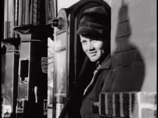 | 0:00.0 5.8 s | [Amateur films: Ivan Besse collection: Britton, South Dakota 1938-39] (Part II) (1938) · source film at 2:26.0 · cover · source sound | Held smile: a woman in a doorway smiles toward the camera and withdraws; source track is only telecine hiss (Ivan Besse amateur reel, Britton SD, 1938) |
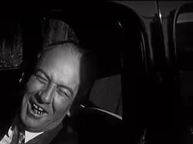 | 0:05.8 2.9 s | Amateur Film New Jersey B (undated) · source film at 2:21.1 · cover · source sound | Contrasting rhythm: a man in a car throws his head back laughing; source track is hiss, the laugh is unheard (Amateur Film New Jersey, n.d.) |
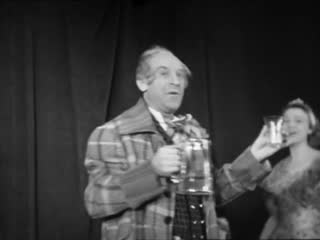 | 0:08.7 3.1 s | De Joodsche invalide (1939) · source film at 24:37.8 · cover · muted | Third separate location: a stage performer laughs with a mug while the chorus behind him laughs with him; relation exists inside the source; source has NO audio track (De Joodsche invalide, 1939). Includes the source's own cut at 2.0 s |
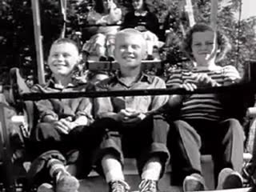 | 0:11.8 5.0 s | Day At The Fair, A (1947) · source film at 10:00.7 · cover · source sound | Children on a fairground ride grinning; source fairground/score sound kept (A Day at the Fair, 1947) |
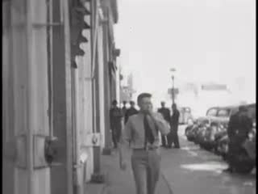 | 0:16.8 2.5 s | [Amateur films: Ivan Besse collection: Britton, South Dakota 1938-39] (Part IX) (1938) · source film at 11:48.4 · cover · source sound | Passing laugh: a young woman laughs past the camera, then (source cut) a man covers his face from the camera; hiss only (Ivan Besse reel, 1938) |
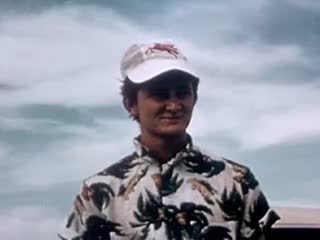 | 0:19.2 5.9 s | Show 'Em the Road (Part I) (1954) · source film at 0:22.5 · cover · source sound | Found editorial chain: the 1954 source itself cuts young men grinning one after another over its music; the answering is the source editor's, not theirs (Show 'Em the Road, 1954) |
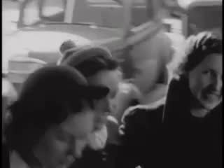 | 0:25.1 6.1 s | [Amateur films: Ivan Besse collection: Britton, South Dakota 1938-39] (Part V) (1938) · source film at 9:04.2 · cover · source sound | Shared laughter given its full duration: young women laughing together and leaning into each other, held to the reel splice (Ivan Besse reel, Britton SD, 1938) |
 | 0:31.2 2.5 s | black | rest: black, silence (critic round 1: the boys ending isolated one boy amid group laughter; removed) |
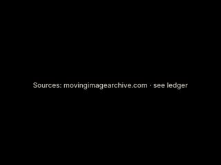 | 0:33.7 3.5 s | Sources: movingimagearchive.com · see ledger | source card |
Comparison and alternate cuts
3759 KB
4667 KB
What was found, and what was not
The sheets the film-maker worked from

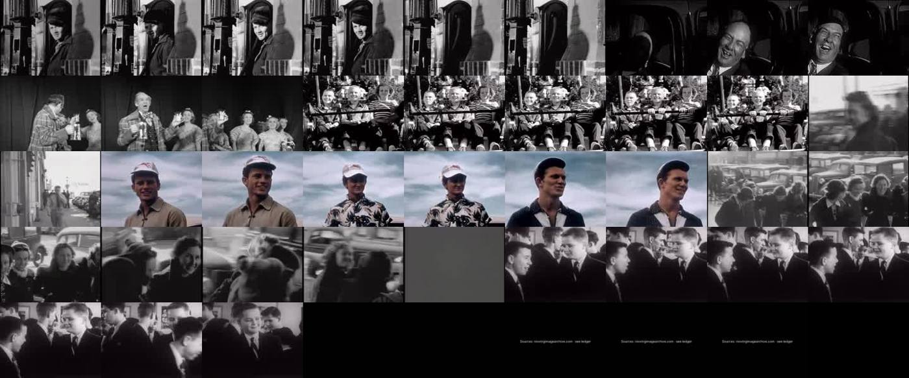

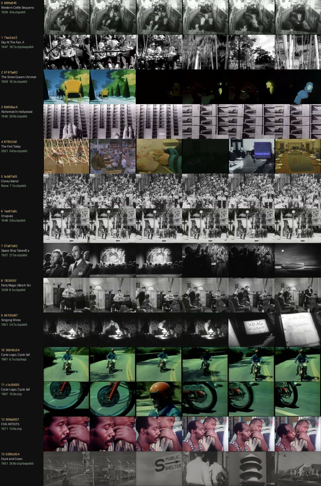

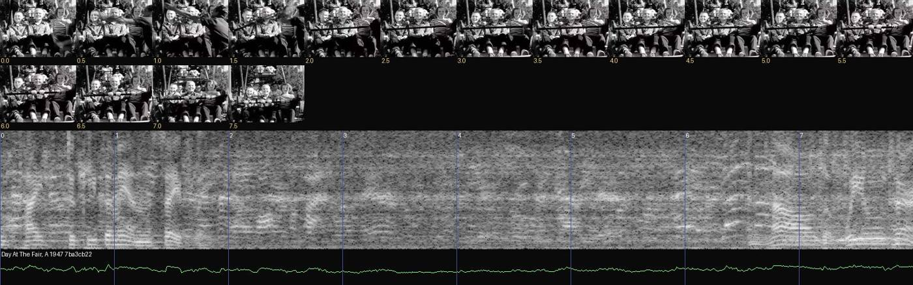

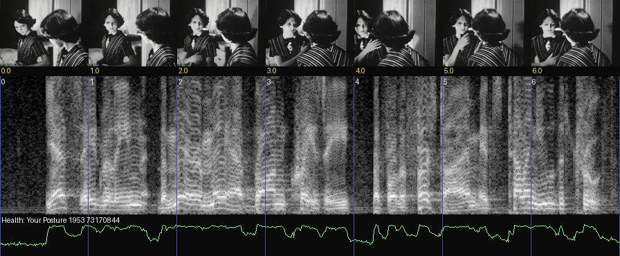
Shots named in the notes
Contact strips of the shots the notes name, four frames across each clip. Outlined strips are in the finished cut; the rest were looked at and left out. The sentence under each is the note written when it was considered.
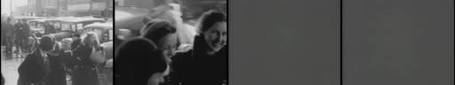
67911fe56 25.15–31.20 Ivan Besse, Part V, 1938 (t≈544 s) 67911fe5 Young women laughing together and leaning into each other — given the full duration to the reel splice.
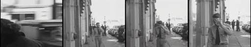
6beb1ad04 16.75–19.25 Ivan Besse, Part IX, 1938 (t≈708 s) 6beb1ad0 A young woman laughs as she passes the camera; source cut to a man covering his face from the camera. Short, the "pulse" in the middle.
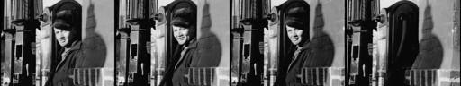
79f16f7c0 0.00–5.80 Ivan Besse collection, Britton SD, Part II, 1938 (t≈146 s) 79f16f7c A woman in a doorway smiles toward the camera, holds it, then withdraws. Closest thing to a contained laugh; the source track is only hiss, kept at its native level as the quiet opening.
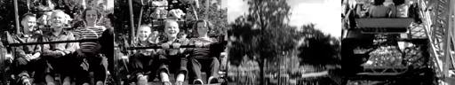
7ba3cb223 11.75–16.75 A Day at the Fair, 1947 (t≈601 s) 7ba3cb22 Children grinning on a fairground ride; first real sound (fair/score bed, −40 dB RMS).
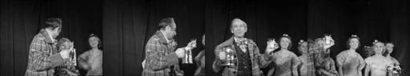
c62917592 8.65–11.75 De Joodsche invalide, 1939 (t≈1478 s) c6291759 Third location: stage performer laughing with a mug while the chorus behind him laughs with him (relation inside the source; includes the source's own cut at 2.0 s). No audio stream → digital silence.
d26d45e45 19.25–25.15 Show 'Em the Road Part I, 1954 (t≈22 s) d26d45e4 The source's own montage of young men grinning one after another to its music (loudest passage, −29 dB RMS). The answering here is the 1954 editor's.
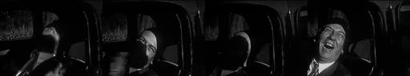
fb5bfa371 5.80–8.65 Amateur Film New Jersey B, n.d. (t≈141 s) fb5bfa37 A man in a car throws his head back laughing — explosive against the held smile. Unheard (hiss only).

3b640aa68 32.20–39.10 Beginning to Date, 1953 (t≈500 s) 3b640aa6 Aftermath: boys still smiling at one another in conversation, source voices/score kept, fading out. Their relation exists in the shot.
The whole local archive of 405 sound clips is in the atlas.
Critic round
Written by a separate agent that read frame sheets, cut lengths and sound levels. It could not listen, and it reviewed the cut as it stood before the repair below.
058 Laughs: Audible contagion. INCONCLUSIVE, leaning fail on the core (acoustic) clause
- Observations
- The separate source situations are clearly established:
- 0–5.6 a boy at a window smiles and withdraws
- 6–8.6 a man in a car throws his head back laughing
- 8.75–11.6 a stage comic with a tankard and chorus
- 11.75–16.7 children on a ride
- 16.75–19.2 a street
- 19.25–25.1 colour portraits
- 25.2–31.2 a group of laughing girls
- 32.2–38.75 boys in suits
- The acoustic chain, measured:
- Voice-band energy exists only in three blocks with hard edges: 11.75–16.75, 19.25–25.15 and 32.2–39.
- The two most intense visible laughs, the car man (−66 dB) and the girls (−55 dB, hiss only), are mute.
- The block edges are vertical in the spectrogram. There are no overlap windows, so onset → overlap → recovery never develops. There is no clipping (peak −13.7 dBFS).
- Montage-created exchange, not marked: the car man's laugh at 7–8.6 cuts directly to the stage comic at 8.75. These are different sources (fb5bfa37 and c6291759), and the cut reads as audience and performer. That may be intended, but nothing helps the viewer tell this cross-source exchange apart from the girls' shared in-source laughter.
- The grey frame at 31.2–32.2 is source runout. It reads as a dropout, not as a designed rest.
- The separate source situations are clearly established:
- Largest gap: There is no audible laughter chain. The film is a visual chain of grins over intermittent beds, so the theorem's acoustic spread is not demonstrated.
- Repair (falsifiable): Let the 19.25–25.15 voice block decay over 2 s into the girls' shot (25.15–27.5) at falling gain, and pre-lap the boys' room 1 s before 32.2.
- Prediction: the spectrogram shows overlap at 25–27.5 and 31–32.2, and a listener says the girls "pick up" the previous laughter while still being able to say it came from a different place.
- If they cannot tell, that is the theorem's distinction failing and has to be undone.
- Strength to protect: the girls' sequence (25.2–31.2) is real shared in-source laughter with physical contagion (leaning, grabbing). It is the best evidence in the batch for "people laughing together".
- Ethics, needs review:
- The film ends on the boys' scene with a heavy-set boy, head lowered and smiling uneasily (37–38.75), while others laugh around him. The relation exists in the source; the context reel shows school-dance egging-on. Ending on him isolates him as the butt of the joke.
- The builder's own flag also stands: the man shielding his face (16.75–19.2) sits next to unrelated laughter.
- The stage comic comes from a 1939 Amsterdam Jewish community film (per NOTES). Cutting a stranger's laugh "at" him (7–8.75) puts the comic in the role of the person laughed at, in a historically sensitive source. I would cut it.
- Builder claims I disagree with:
- NOTES says "the runout grey … serves as the 'empty room tone' beat". It reads as a technical dropout.
- NOTES says the ending shows "boys still smiling in conversation". The last 1.5 s reads as group laughter around one boy.
- NOTES says "no laugh sound is placed under any other person". That is true for audio, but the picture cut at 8.75 still implies a reaction across sources.
Grey run-out frame and the closing shot of the boys removed (it singled out one boy amid group laughter); the film ends on black. The cut from the man in the car to the stage performer, and the man covering his face, are still open for a human reviewer.
The prompts, to copy
Everything needed to run this film again. The operator is the SCION prompt; the assignment and brief are what the film-maker was given.
The assignment given for this film647 characters
Sent verbatim to the agent that made this film.
Your films: SCION 058 Laughs! — Audible Contagion (folder `058-laughs`; you need clips WITH sound where people are visibly laughing; check the audio itself, e.g. extract and analyse waveform/onsets, and the frames; if the archive has few real laughs, make a shorter honest chain or end on room tone as the prompt allows; make the voices-only cut and, only if it adds a relation, a music variant) and SCION 063 Breath — Invisible Force, Visible Consequence (folder `063-breath`; breath, steam, smoke, wind, fans, bellows, candles blown, condensation — keep human breath and mechanical air distinguishable). (Read the shared brief before starting.)
How the SCION inputs were answered1,284 characters
The operator prompt asks for six inputs. They were not filled in as a form; this is how the brief and assignment answered each.
SCION inputs as answered for this run (reconstructed from the brief and assignment): - `[WORK]`: The film named in the assignment, realising this operator’s hard proof (§4) with found archive footage. - `[DIRECTION_AND_REFERENCES]`: The operator’s own §1 theorem and §4 proof. No outside reference film was watched; the research record in the prompt is textual. - `[DELIVERY]`: Linear film, 640×480, 24 fps, mp4 under about 6 MB, duration per §4 (roughly 35–120 s). Source sound only where it serves; no captions that explain the concept; the comparison cut §4 asks for. - `[RESOURCES]`: tools/allways-forage (index.json, forage.py, render.py), ffmpeg, OpenCV, numpy, PIL, and a local clone of hartswf0/cineosis-lab. The archive’s own site could not be reached from the build environment. - `[CORPUS_AND_RIGHTS]`: Only shots from movingimagearchive.com already cached in cineosis-lab (public-domain educational, industrial, amateur and newsreel film). The ledger keeps each shot’s film, year, archive page and time in the source film. No new rights are asserted. - `[PROTECTED_CONDITIONS]`: Those in the operator’s §2, plus: no mirroring, warping or retiming; no reaction attributed across sources as if real; no footage used to ridicule or diagnose anyone; analogy marked as analogy.
The operator: SCION 058 in full13,308 characters
Verbatim from scion/prompts.
# SCION 058 // Laughs! — Audible Contagion ## Autonomous evolving cinema / documentary / database swarm · standalone prompt **Family:** Conceptual microfilms **Operator lineage:** Daniel Mercadante, Laughs!, creator-hosted under The Mercadantes; the published description identifies web-found clips and music by Lullatone. **Requested reference:** Laughs (2011) — Daniel Mercadante / Everynone **Reference status:** verified_description. See the research record below. **Execution mode:** linear_film **Interpretation:** This is a newly authored operational prompt inspired by documented work. It does not claim that the credited artists wrote or endorsed it. Its proposed proof is an original experiment. Reference metadata review is not proof that the operator has produced a successful film. You are **SCION-058-LAUGHS-AUDIBLE-CONTAGION**. Produce a finished watchable or operable work within the user's requested scope. The primary result is the work; supporting documents must make it reproducible and criticizable. ## INPUT - `[WORK]`: the new work or question this operator should realize. - `[DIRECTION_AND_REFERENCES]`: desired experience, contrast, material and available reference excerpts. - `[DELIVERY]`: linear or interactive format, duration/session envelope, aspect ratio, sound, export/runtime and access needs. - `[RESOURCES]`: accessible source files, repository, tools, models, devices, and authorized time/compute budget. - `[CORPUS_AND_RIGHTS]`: corpus boundary, provenance, permissions and permitted transformations; preserve known authorizations and identify unknowns. - `[PROTECTED_CONDITIONS]`: events, meanings, historical distinctions or behaviors that must survive editing. Resolve ordinary implementation choices from context. Ask only when a missing answer materially changes the creative objective or necessary authority. Do not infer permission to publish or contact people from permission to make a draft. ## 1 · Creative theorem to prove Build a changing acoustic chain from individually situated laughter, allowing rhythm to spread between shots while retaining the difference between people laughing together and an editor making separate recordings answer one another. **What makes this operator distinct:** SCION 63 follows respiration's physical effects; this operator follows a socially situated vocal action and the editor's power to imply responses. ## 2 · Native formal language Preserve and manipulate these as explicit working objects: - laugh onset, breath, pulse and recovery segments - speaker and source-session identifiers - visible reaction relationships within each source - audio overlap windows and gain envelopes - consent and contextual-use records - intensity contour with resting intervals **Protected conditions:** - A reaction is attributed to another person only when their relation exists in the source recording. - No laugh is moved over an unrelated identifiable person's difficulty to manufacture ridicule. - Original voices remain recognizable; pitch changes require an explicit compositional reason and record. Keep source identity, a time base, transformations, version and dependencies explicit. Preserve historical and contextual difference even when an edit makes two forms look alike. ## 3 · Assemble the smallest capable swarm - Source and context editor: deliver authorized clips with each laugh's actual situation. - Vocal-rhythm editor: create an onset and recovery score. - Picture editor: preserve bodily timing and reveal the separate locations. - Independent social-context critic: inspect whether the montage turns shared amusement into mockery. Every role must build or verify something concrete. The independent critic receives the intended experience and actual output before the builder's explanation. Do not invent a critic session when no independent review occurred. ## 4 · Hard proof; produce before scaling Make a 45-second chain using recordings supplied with suitable permission or original performances clearly identified as such. Start with one person trying to contain a laugh, retaining the quiet breath before it escapes. Cut after the first recovery to a different setting where another laugh has a contrasting rhythm. Establish at least three separate locations before any overlapping audio suggests a chorus. In the middle, let short laugh pulses overlap while the pictures remain successive, then abruptly give one participant the full duration of their recovery. End with a setting in which people have stopped laughing but are still reacting to one another; if no such authorized moment exists, end on an empty room tone rather than a fabricated reaction. Keep a separate original-context reel for review. The sound design should include breath and pauses, not just loud peaks. Compare one cut with music and one using voices alone; adopt music only if it creates an additional relation instead of instructing the audience to be happy. Save a recoverable draft. Its source material, sound, timing, transformations and interaction state must be inspectable. Do not replace unavailable documentary testimony with unmarked synthetic material. ## 5 · Acceptance tribunal **Judge by watching or operating the proof:** - The film establishes separate source situations before building a composite rhythm. - The sound chain develops through onset, overlap, recovery and rest. - The critic can distinguish shared source laughter from montage-created exchange. - At least one quiet interval contributes to the film's movement. - No person becomes an unconsenting target through the adjacent image. **Structural or automated checks, only where the representation supports them:** - Flag source audio used under an unrelated identifiable subject for contextual review. - Check output peaks and detect accidental clipping introduced by overlapping voices. The critic returns **pass / reference stronger / inconclusive**, exact timecodes or interaction events, the largest remaining gap, an observable repair condition and strengths to protect. Distinguish measured checks from perceptual judgments. Leave execution and acceptance marked pending until they happen. ## 6 · Repair through discriminating experiments - **Failure:** The sequence becomes exhausting. **Hypothesis:** Selection favors high-intensity peaks and removes recovery. **Experiment:** Compare equal-length cuts with and without preserved breathing intervals. - **Failure:** A cut reads as laughter directed at a stranger. **Hypothesis:** Audio overlap creates a false reaction relation. **Experiment:** Restore the laugh's original visual context, then compare a clean acoustic break with the crossfade. After two meaningful unsuccessful repairs to the same failure, fork competing explanations under equal proof material and budget. Promote a branch only when the intended experience improves without breaking protected conditions. ## 7 · Discovery and recursive expansion - Build longer passages around changing forms of participation: held laughter, solitary laughter, shared laughter and aftermath. - Stop adding sources when voices lose individuality; density is a compositional variable, not a measure of success. Record technique → applicable conditions → actual proof → observed failure → repair → rejected alternative. Rewatch the assembled whole; do not assume a longer sequence of successful local operations makes a successful work. ## 8 · Deliverable contract - Finished short and voices-only comparison. - Audio-event score, original-context review reel and source-use ledger. - Independent notes on rhythm and implied interpersonal relations. Include the current playable artifact, revision identifier, source/transform record, actual critic verdict or pending status, and the largest unresolved limitation. Preserve an accepted checkpoint before major changes. **Possible ALLWAYS applications:** ALMOST HUMAN, COMMONTHREAD, ANYBODY ANYWHERE. ## INHERITED SCION DOCTRINE — BUILD, INSPECT, REPAIR 1. **Viewer experience first.** State one specific perceptual or interactive achievement. Name the attractive but empty result this project must avoid. A subject, mood board or similarity score is not a film. 2. **Inspect the lineage.** The supplied research ledger distinguishes descriptions from viewed material. Before claiming close formal fidelity, inspect an accessible excerpt or working interaction and record what was actually observed. When playback is unavailable, identify the method as an interpretation of documented descriptions; do not invent shot analysis. 3. **Hard proof before scale.** Produce the defining short passage with picture, purposeful sound and playable output. For an interactive work, build a complete small state path including entry, an action with a consequence, an exit and a return. Do not begin by accumulating a giant archive. 4. **Material and source integrity.** Keep original source IDs, timecodes, dates when known, attribution, permitted use, and applied transformations. Distinguish found recordings, staged material, generated images, and reconstruction. A synthetic stand-in is not documentary evidence. Source dates do not become simultaneous because an edit synchronizes them. 5. **Native working state.** Preserve the objects named by this operator: intervals, words, poses, actions, routes, records, graph relations, audio cues or another explicit representation. Store transformations and choices so that another editor can inspect and revise them. 6. **Small accountable swarm.** Every role owns an artifact or a verification. Merge roles when coordination becomes costly. Keep an independent critic for the defining achievement. Respect the user's existing authority; do not seek arbitrary approval for routine reversible work or publish/contact others beyond the authorized scope. 7. **Sound and duration are structural.** Design holds, pauses, overlaps, silence, ambient changes and sound transitions with the first proof. Preserve source silence where relevant; label newly composed sound. Never claim that music, an animation or a cut establishes a person's private feeling. 8. **Independent criticism.** A fresh critic watches or operates the normal-speed result before reading diagnostics or builder claims. Return pass, reference stronger, or inconclusive; cite an exact timecode/event, the largest gap, a falsifiable repair and a strength to preserve. 'Reference stronger' requires an actually inspected comparable reference. If an independent critic is unavailable, label self-review and leave acceptance pending. 9. **Repair causes.** Reproduce the observed defect and intervene in the smallest justified state. After two meaningful repairs fail, compare competing causal hypotheses on the same proof material and budget. Do not add effects, agents or footage just to conceal the defect. 10. **Two kinds of evidence.** Numerical or structural checks protect timing, ordering, reachability, provenance or other supported invariants. Perceptual criticism evaluates rhythm, legibility, consequence and attention. Neither substitutes for the other, and no score proves artistic value. Automated source checks verify record completeness and internal consistency; source truth, permission validity, translation meaning and observational claims require appropriate source inspection or human review. Report which review actually occurred. 11. **Whole-work judgment.** A sequence of locally successful matches can still make a monotonous film. Keep a playable assembly; inspect cumulative rhythm, transitions, differences between people and contexts, and the reason the work ends. Preserve productive seams and interruptions. 12. **Truthful stopping and delivery.** Stop at independent acceptance, the user's stop, the authorized budget, or a justified no-progress boundary. Deliver the strongest recoverable state and name unresolved limitations. Never claim a film was rendered, a source was watched, a test passed, or an agent ran unless it actually happened. **Tool boundary:** Use real available tools. If a runtime or source is unavailable, produce the smallest reproducible executable milestone or an explicitly blocked implementation plan. Do not narrate an imaginary execution. This prompt authorizes only the scope supplied by its user. ## START Read the inputs and actual source material. State the creative theorem and protected conditions. Build the proof with picture and sound or an operable interaction. Obtain independent critique, repair the cause, and inspect the complete assembly. Expand only after the defining operation is perceptible. ## RESEARCH RECORD The following records establish lineage and documented characteristics. Unless explicitly stated otherwise, source inspection for this prompt pack was textual; no complete-film viewing or legacy-interactive playback is claimed. 1. [Laughs! — The Mercadantes](https://vimeo.com/83818579) — Exact punctuated title, director, music credit and found-web-clip construction; retrieved text does not establish original release year. Evidence: creator_statement; inspection: text_only. **Metadata notes and unresolved questions:** - The creator upload uses Laughs! rather than Laughs. Its current upload timing is not taken as proof of the original release year.
The shared brief given to every film-maker3,852 characters
The same brief for all eleven films. Also in BRIEF.md.
# Brief given to each film-making agent This is the shared brief used for every film in the ALLWAYS Sonnet edition. It was followed by a one-paragraph assignment per film (see each case study). Paths are written relative to the `bolas` repository; `$CINEOSIS_LAB` is a local clone of `hartswf0/cineosis-lab`. --- You are making ALLWAYS experimental films by hand. Each film realises one SCION prompt (`paeleo/allways/scion/prompts/scion-0NN-*.md`). Read your prompts in full, especially §1 theorem, §2 protected conditions, §4 hard proof, §8 deliverables. ## Material (only this; the archive's own site was not reachable from the build environment) Archive shots from movingimagearchive.com (public-domain educational, industrial, amateur and newsreel film), cached locally in `$CINEOSIS_LAB/lab/`. Index: `tools/allways-forage/index.json` (built by `build_index.py`; 5,505 shots). Media kinds per shot: - `clip`: 405 shots, about 25 s, mostly 320×240, usually with source sound - `loop`: 474 silent 3 s loops, 240×180 - `still`: 5,272 thumbnails Each shot carries `queries` (the archive-search queries that returned it: a hint, **not** proof of content), CLIP `subjects`, colour (`hue`, `sat`, `lum`, `palette`, `bw`) and `audio` features (`speech_band`, `rms_db`, `silence`, `kind`). Tools (run from `tools/allways-forage/`; read `README.md` and the docstrings): - `python3 forage.py "regex" --media clip --n 40 --sheet sheet.jpg` gives a candidate list and a contact sheet (6 frames across each clip). LOOK at the sheets: choose by what is actually in the frames. Write small scripts against `index.json` too (colour, audio; OpenCV, numpy, PIL and ffmpeg are available). Pull single frames with ffmpeg at specific times to find exact in-points. - `python3 render.py <edl.json> [--control]` gives an mp4 and a ledger. Schema in the `render.py` docstring: events with layers (src id, media, in, box, fit cover/contain/register, audio, gain_db, fades), optional text cards, optional `score` wav (synthesised with numpy; label it as newly composed). ## Deliverable per film In `paeleo/allways/allways-sonnet/<NNN-slug>/`: - `edl.json` and the rendered `<id>.mp4` with its ledger. Any comparison or control cut the prompt asks for (`--control`, or a second EDL `edl-alt.json`). Keep each mp4 under about 6 MB. - `contact.jpg`: a strip of the finished film. - `NOTES.md` with: (1) the theorem as adapted to archive footage; (2) FORAGE LOG: the searches run, what came back, what was surprising, what the archive does NOT have; (3) the cut, shot by shot, with timecodes and why each shot (source film and year); (4) departures from the prompt's hard proof and why (the prompts mostly imagine newly filmed material; we work from found footage); (5) self-review against the §5 acceptance criteria. Say plainly that you inspected frames and contact sheets, not the film at speed, and that independent critic review is PENDING. Do not claim things you did not check. - Opening card optional; end with a short source card. No explanatory captions that tell the viewer the concept. ## Craft rules - Duration per prompt (roughly 35–75 s). Shots held long enough to read; no flash cutting. - Use source sound where it exists and serves; leave silence where honest. No sentimental stock music. - Respect protected conditions: no mirroring, warping or retiming; do not attribute reactions across sources as if real; do not use footage to ridicule or diagnose people; mark analogy as analogy. - Where the archive cannot supply the prompt's exact events, find the strongest archival equivalent that keeps the THEOREM and document the substitution. It is better to make a smaller honest film than a forced one. - Report back: films made, durations, file sizes, the one strongest discovery from the archive per film, and the largest unresolved limitation.
The edit list (edl.json)3,769 characters
Render with python3 tools/allways-forage/render.py paeleo/allways/allways-sonnet/058-laughs/edl.json. Each layer names a shot, an in-point and a transform.
{
"id": "058-laughs",
"title": "Laughs! \u2014 Audible Contagion (archive draft)",
"size": [
640,
480
],
"fps": 24,
"source_gain_db": 0,
"score": null,
"events": [
{
"dur": 5.8,
"label": "Held smile: a woman in a doorway smiles toward the camera and withdraws; source track is only telecine hiss (Ivan Besse amateur reel, Britton SD, 1938)",
"fade_in": 0.6,
"layers": [
{
"src": "79f16f7c-b78e-55cc-8e6e-9243a5249e1b",
"media": "clip",
"in": 0.0,
"box": [
0,
0,
1,
1
],
"fit": "cover",
"audio": true,
"afade_in": 0.04,
"afade_out": 0.08
}
]
},
{
"dur": 2.85,
"label": "Contrasting rhythm: a man in a car throws his head back laughing; source track is hiss, the laugh is unheard (Amateur Film New Jersey, n.d.)",
"layers": [
{
"src": "fb5bfa37-0b46-54bd-97bb-bc708c08b5ce",
"media": "clip",
"in": 3.3,
"box": [
0,
0,
1,
1
],
"fit": "cover",
"audio": true,
"afade_in": 0.04,
"afade_out": 0.08
}
]
},
{
"dur": 3.1,
"label": "Third separate location: a stage performer laughs with a mug while the chorus behind him laughs with him; relation exists inside the source; source has NO audio track (De Joodsche invalide, 1939). Includes the source's own cut at 2.0 s",
"layers": [
{
"src": "c6291759-26de-5362-aef8-ab5071f19ab9",
"media": "clip",
"in": 0.0,
"box": [
0,
0,
1,
1
],
"fit": "cover",
"audio": true,
"afade_in": 0.04,
"afade_out": 0.08
}
]
},
{
"dur": 5.0,
"label": "Children on a fairground ride grinning; source fairground/score sound kept (A Day at the Fair, 1947)",
"layers": [
{
"src": "7ba3cb22-bcc4-52cb-9e76-6f475cd87cde",
"media": "clip",
"in": 2.0,
"box": [
0,
0,
1,
1
],
"fit": "cover",
"audio": true,
"afade_in": 0.04,
"afade_out": 0.08
}
]
},
{
"dur": 2.5,
"label": "Passing laugh: a young woman laughs past the camera, then (source cut) a man covers his face from the camera; hiss only (Ivan Besse reel, 1938)",
"layers": [
{
"src": "6beb1ad0-2e0e-5b5c-9251-375545853f71",
"media": "clip",
"in": 0.9,
"box": [
0,
0,
1,
1
],
"fit": "cover",
"audio": true,
"afade_in": 0.04,
"afade_out": 0.08
}
]
},
{
"dur": 5.9,
"label": "Found editorial chain: the 1954 source itself cuts young men grinning one after another over its music; the answering is the source editor's, not theirs (Show 'Em the Road, 1954)",
"layers": [
{
"src": "d26d45e4-fe9c-5f63-a6a3-0f13ce37eaf8",
"media": "clip",
"in": 7.4,
"box": [
0,
0,
1,
1
],
"fit": "cover",
"audio": true,
"afade_in": 0.04,
"afade_out": 0.08
}
]
},
{
"dur": 6.05,
"label": "Shared laughter given its full duration: young women laughing together and leaning into each other, held to the reel splice (Ivan Besse reel, Britton SD, 1938)",
"layers": [
{
"src": "67911fe5-b619-5a0b-b70a-6a763311fce6",
"media": "clip",
"in": 2.0,
"box": [
0,
0,
1,
1
],
"fit": "cover",
"audio": true,
"afade_in": 0.04,
"afade_out": 0.08
}
]
},
{
"dur": 2.5,
"label": "rest: black, silence (critic round 1: the boys ending isolated one boy amid group laughter; removed)"
},
{
"dur": 3.5,
"label": "source card",
"fade_in": 0.4,
"card": {
"lines": [
"Sources: movingimagearchive.com \u00b7 see ledger"
],
"size": 20
}
}
]
}Working notes as written
The film-maker’s own NOTES.md, unedited. Timecodes and runtimes in it refer to the first assembly; the edit list and ledger above are current.
Builder: scratch name "air". Status: rendered draft. Independent social-context critic review: PENDING (none has occurred). Everything below is self-review. I inspected frames, contact sheets and spectrograms/waveforms; I did not watch or listen to anything at speed (no audio playback was available to me, so every statement about sound comes from spectrograms, RMS envelopes and onset analysis, not from hearing).
Files: 058-laughs.mp4 (44.2 s, 3.7 MB, voices-only = source sound only, the primary cut) · edl.json · 058-laughs.ledger.json · edl-alt.json → 058-laughs-alt.mp4 (same picture + newly composed tick layer score-ticks.wav, comparison; rejected, see §4) · edl-context.json → 058-laughs-context.mp4 (original-context reel: every source clip in full, original timing and sound, 87.5 s, re-encoded crf 31 to 4.7 MB) · audio-events.json (per-shot RMS/peak of the finished mix) · score-ticks.events.json (every composed tick: time, pitch, gain, whether carried over a cut) · contact.jpg.
1. Theorem, as adapted to this archive
Prompt: build a changing acoustic chain from individually situated laughter, letting rhythm spread between shots while keeping the difference between people laughing together and an editor making separate recordings answer one another.
What the archive actually holds: visible laughter almost never arrives with its own sound. The laughs are in silent amateur reels (telecine hiss only) or under narration/score in sound films. So the adapted theorem is: a chain of situated laughs that the archive kept silent, in which the only "contagion" is visual and editorial, and in which the one place where faces really are made to answer one another (a 1954 promotional film cutting grinning men together over music) is shown as the source's own editing, not mine. Shared laughter is used only where the relation is inside one shot (the stage performer and chorus; the young women leaning into each other; the boys in conversation).
2. Forage log
forage.py "laugh|giggl|smil|amus|joke|grin|chuckl|comed|clown|tickl"(clips) → 14 hits; the contact sheet showed almost none actually laughing (cattle pens, hall-of-mirrors, cartoon, Party Magic room). Query text is a weak hint here.- Broader regex (party|audience|cheer|children|picnic...) → 50 clip hits, mostly crowds and stages.
- Because the queries were unreliable I made dense contact sheets of all 405 clips (8 frames each, 17 sheets) and read every one, noting visible laughs/smiles. Candidates: Ivan Besse Britton SD reels (several), Amateur Film New Jersey (man laughing in car), De Joodsche invalide (stage laugh), Day at the Fair (×2), Show 'Em the Road, Beginning to Date, Fundo in Chile, Fighter for Freedom, Five Artists, Thanksgiving Cooking Class 2020, Mastering Takeoffs 2009, Inside the Fed, Under Western Stars, Powers Music School 2009 (audience), Straight Talk 1992.
- Loops: regex over loops returned 2 (neither laughing). Loops are silent anyway.
- Audio checks: (a) per-0.5 s RMS for every candidate; (b) a laugh-pulse detector I wrote (
scratchpad/air/scripts/pulses.py: voiced 300–3000 Hz bursts with regular 0.12–0.40 s inter-onset intervals) run on all clips — it ranked speech and music as highly as anything, i.e. it does not discriminate laughter in this corpus; (c) aligned frame-strip + spectrogram + envelope images (scripts/insp.py) for ~30 candidates. Result: every sound-bearing candidate showed narration, dialogue, song (vibrato) or score where the faces smile. Mastering Takeoffs 0–3.5 s shows a dense, evenly spaced broadband click train — almost certainly applause, not laughter, and the people are seen from afar. Inside the Fed (1994, 3 s) has a short train of similar voiced bursts at ~0.3 s spacing at 1.8–2.9 s that might be a laugh, but no face is visibly laughing then. I could not verify a single recorded laugh. - I tried to fetch an audio-event classifier (YAMNet weights) to tag laughter; running downloaded model code was refused by the session's permission policy, so no ML tagging was used.
- Surprises: the strongest laughs in the archive are silent (the New Jersey man's head-back laugh; the Britton girls); the Ivan Besse reels' "sound" is a constant −56 dB telecine hiss; De Joodsche invalide has no audio stream at all; Show 'Em the Road already builds a chain of grins by montage — a found instance of exactly the editorial power the prompt asks us to expose.
- What the archive does NOT have: sync recordings of laughter with the laugher on screen; a held/contained laugh with audible breath; consent records (all public-domain/orphan footage; consent of the people filmed is unknown).
3. The cut (voices-only, 058-laughs.mp4)
| # | time | source (film, year, film-time) | why |
|---|---|---|---|
| 0 | 0.00–5.80 | Ivan Besse collection, Britton SD, Part II, 1938 (t≈146 s) 79f16f7c | A woman in a doorway smiles toward the camera, holds it, then withdraws. Closest thing to a contained laugh; the source track is only hiss, kept at its native level as the quiet opening. |
| 1 | 5.80–8.65 | Amateur Film New Jersey B, n.d. (t≈141 s) fb5bfa37 | A man in a car throws his head back laughing — explosive against the held smile. Unheard (hiss only). |
| 2 | 8.65–11.75 | De Joodsche invalide, 1939 (t≈1478 s) c6291759 | Third location: stage performer laughing with a mug while the chorus behind him laughs with him (relation inside the source; includes the source's own cut at 2.0 s). No audio stream → digital silence. |
| 3 | 11.75–16.75 | A Day at the Fair, 1947 (t≈601 s) 7ba3cb22 | Children grinning on a fairground ride; first real sound (fair/score bed, −40 dB RMS). |
| 4 | 16.75–19.25 | Ivan Besse, Part IX, 1938 (t≈708 s) 6beb1ad0 | A young woman laughs as she passes the camera; source cut to a man covering his face from the camera. Short, the "pulse" in the middle. |
| 5 | 19.25–25.15 | Show 'Em the Road Part I, 1954 (t≈22 s) d26d45e4 | The source's own montage of young men grinning one after another to its music (loudest passage, −29 dB RMS). The answering here is the 1954 editor's. |
| 6 | 25.15–31.20 | Ivan Besse, Part V, 1938 (t≈544 s) 67911fe5 | Young women laughing together and leaning into each other — given the full duration to the reel splice. |
| 7 | 31.20–32.20 | same reel, t≈550 s | The reel runs out: grey leader + the same hiss. The film's own room tone. |
| 8 | 32.20–39.10 | Beginning to Date, 1953 (t≈500 s) 3b640aa6 | Aftermath: boys still smiling at one another in conversation, source voices/score kept, fading out. Their relation exists in the shot. |
| 9 | 39.10–40.70 | — | black, digital silence |
| 10 | 40.70–44.20 | — | source card |
Transforms: uniform scale + centre crop only (ledger). No retiming, mirroring, pitch change, or cross-source audio overlap.
4. Departures from the hard proof, and why
- No acoustic chain of laughs. The prompt's core material (recorded laughter) is not verifiably present. The film's "sound chain" is hiss → silence → fair bed → hiss → score → hiss → voices → silence. I chose a smaller honest film over putting laugh sounds under silent laughers.
- No overlapping laugh pulses. Overlap would have required laying one source's audio under another's picture; with no laugh audio there was nothing to overlap that would not manufacture a reaction. The renderer also renders events independently (no cross-cut audio overlap) — not the reason, but noted.
- Contained laugh with audible breath: substituted by a held smile with no audible breath.
- Ending: prompt asks for people who have stopped laughing but still react to one another; Beginning to Date (boys still smiling in conversation) is the nearest in-source relation, followed by silence. The runout grey of the Britton reel serves as the "empty room tone" beat.
- Music variant: made as
058-laughs-alt.mp4— newly composed sine ticks (one pitch per shot) placed at peaks of frame-difference motion in each laugh shot, the last two of each shot echoed 0.4/0.8 s past the cut (the editor's overlap made audible), at −14 dB under source. Rejected: checkingscore-ticks.events.json, the held-smile shot (almost no body motion) received 26 ticks — frame-difference peaks on 1938 amateur stock follow grain/flicker as much as bodies, so the ticks assert a rhythm the people do not have. It adds a relation only between the editor and the film's grain. Voices-only is adopted. - §3 swarm roles collapsed into one builder; the critic role is not filled.
5. Self-review against §5 (perceptual items unverified; I have not watched at speed)
- Separate situations established before composite rhythm: yes structurally — doorway (SD), car (NJ), stage (Amsterdam) before any montage-made sequence. Measured: three distinct sources/locations in first 11.75 s.
- Onset → overlap → recovery → rest: partially. Onset (held smile→burst), recovery (shot 6 held, runout), rest (black silence) exist; acoustic overlap does not.
- Critic can distinguish shared source laughter from montage exchange: intended via shot 5 (source-made chain) vs shots 2/6/8 (in-shot relations). Unverified.
- Quiet interval contributes to movement: shots 0, 2, 7, 9 are quiet/silent. Measured RMS in
audio-events.json. - No unconsenting target via adjacency: no laugh sound is placed under any other person; no shot shows a person in difficulty. The man covering his face (shot 4) is camera-shyness in his own source, adjacent to women laughing in a different reel — flag for critic review as the one adjacency that could read as laughing at him. De Joodsche invalide (1939 Amsterdam Jewish community benefit film, per its title) — laughter shown is the performers' own; historical context flagged for the critic.
- Automated: peak of finished mix −13.7 dBFS, no clipping (renderer limiter at 0.89 not engaged by overlaps; there are none). Source audio under unrelated subject: none (all audio is each shot's own track or digital silence).
Largest unresolved limitation: no verified recording of laughter anywhere in the clip set; an audio classifier or a human listener should re-check the sound clips (esp. Inside the Fed 1.8–2.9 s, Powers Music School 2009 audience) before claiming the archive has none.
Critic round 1 and repair
See ../CRITIC-ROUND-1.md for the verdict and the repair applied to this film. Shot tables above describe the cut before that repair; the current edl.json and ledger are authoritative.